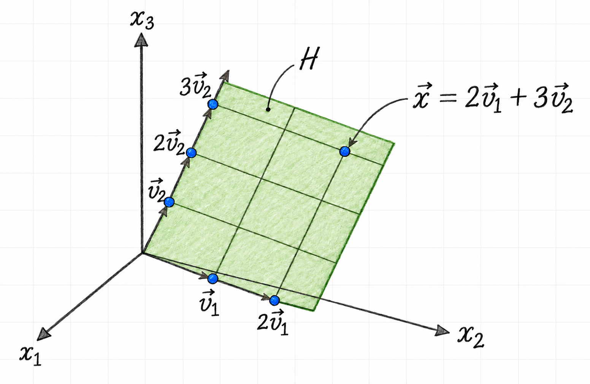

Dimension and Rank
Dimension measures how many independent directions a vector space contains. For a matrix, the corresponding idea is its rank: the number of independent columns, or equivalently the dimension of its column space. Together with the nullity, rank accounts for every input direction of a matrix transformation.
For definitions and step-by-step basis calculations, see Column and Null Space.
1 Dimension of a vector space
The dimension of a nonzero vector space \(V\) is the number of vectors in any basis for \(V\):
\[ \dim(V)=\text{number of vectors in a basis for }V \]
A basis cannot contain the zero vector, since a set containing the zero vector is linearly dependent. The zero subspace is the one exception to the usual description: by definition,
\[ \dim(\{\vec{0}\})=0 \]
Although a vector space can have many different bases, every basis has the same number of vectors. This makes dimension a property of the space rather than of a particular basis.
2 Rank and nullity
The column space of a matrix \(A\) is denoted by \(\operatorname{Col}(A)\). The rank of \(A\) is the dimension of that space:
\[ \operatorname{rank}(A)=\dim\bigl(\operatorname{Col}(A)\bigr) \]
For example, row reduction of
\[ A= \begin{bmatrix} 3 & 1 & 1 & 6 \\ 1 & -2 & 5 & -5 \\ 4 & 1 & 2 & 7 \end{bmatrix} \]
gives
\[ \operatorname{rref}(A)= \begin{bmatrix} 1 & 0 & 1 & 1 \\ 0 & 1 & -2 & 3 \\ 0 & 0 & 0 & 0 \end{bmatrix} \]
The pivot columns are columns \(1\) and \(2\). Therefore, the corresponding columns of the original matrix form a basis for the column space:
\[ \left\{ \begin{bmatrix}3\\1\\4\end{bmatrix}, \begin{bmatrix}1\\-2\\1\end{bmatrix} \right\} \]
Hence,
\[ \operatorname{rank}(A)=2 \]
Columns \(3\) and \(4\) are free-variable columns in the reduced matrix. Solving \(A\vec{x}=\vec{0}\) gives
\[ \begin{aligned} x_1&=-x_3-x_4, \\ x_2&=2x_3-3x_4. \end{aligned} \]
Thus,
\[ \vec{x} =x_3 \begin{bmatrix} -1\\2\\1\\0 \end{bmatrix} +x_4 \begin{bmatrix} -1\\-3\\0\\1 \end{bmatrix}, \]
so the null space has a basis with two vectors and
\[ \dim\bigl(\operatorname{Nul}(A)\bigr)=2. \]
The dimension of the null space is also called the nullity of \(A\).
If a matrix \(A\) has \(n\) columns, then
\[ \operatorname{rank}(A)+\dim\bigl(\operatorname{Nul}(A)\bigr)=n. \]
In the example, \(2+2=4\), the number of columns of \(A\). The theorem expresses a useful balance: every input direction is either represented by a pivot direction or contributes a free direction in the null space.
3 Coordinates relative to a basis
Let
\[ \vec{v}_1= \begin{bmatrix} 3\\6\\2 \end{bmatrix}, \qquad \vec{v}_2= \begin{bmatrix} -1\\0\\1 \end{bmatrix}, \qquad \vec{x}= \begin{bmatrix} 3\\12\\7 \end{bmatrix}, \]
and let \(H=\operatorname{span}\{\vec{v}_1,\vec{v}_2\}\). Since \(\vec{v}_1\) and \(\vec{v}_2\) are linearly independent,
\[ B=\{\vec{v}_1,\vec{v}_2\} \]
is a basis for \(H\). To determine whether \(\vec{x}\) lies in \(H\), solve
\[ c_1\vec{v}_1+c_2\vec{v}_2=\vec{x}. \]
The augmented matrix reduces as follows:
\[ \left[ \begin{array}{cc|c} 3 & -1 & 3 \\ 6 & 0 & 12 \\ 2 & 1 & 7 \end{array} \right] \sim \left[ \begin{array}{cc|c} 1 & 0 & 2 \\ 0 & 1 & 3 \\ 0 & 0 & 0 \end{array} \right]. \]
Thus \(c_1=2\) and \(c_2=3\), so
\[ \vec{x}=2\vec{v}_1+3\vec{v}_2. \]
Therefore \(\vec{x}\in H\), and its coordinate vector relative to \(B\) is
\[ [\vec{x}]_B= \begin{bmatrix} 2\\3 \end{bmatrix}. \]
Figure 1 illustrates these coordinates: starting at the origin, two steps in the \(\vec{v}_1\) direction and three in the \(\vec{v}_2\) direction reach \(\vec{x}\). Although \(H\) lies in \(\mathbb{R}^3\), only two basis coordinates are needed to describe a vector in \(H\), so \(\dim(H)=2\).

The basis defines a coordinate system on \(H\). Its basis vectors form the columns of the matrix
\[ P_B= \begin{bmatrix} 3 & -1 \\ 6 & 0 \\ 2 & 1 \end{bmatrix}, \]
which maps a coordinate vector to its usual coordinates in \(\mathbb{R}^3\):
\[ P_B[\vec{x}]_B = \begin{bmatrix} 3 & -1 \\ 6 & 0 \\ 2 & 1 \end{bmatrix} \begin{bmatrix} 2\\3 \end{bmatrix} = \begin{bmatrix} 3\\12\\7 \end{bmatrix} =\vec{x}. \]
4 Finding rank from pivot columns
Row reduction makes the rank easy to identify. Consider
\[ A= \begin{bmatrix} 2 & 5 & -3 & -4 & 8 \\ 4 & 7 & -4 & -3 & 9 \\ 6 & 9 & -5 & 2 & 4 \\ 0 & -9 & 6 & 5 & -6 \end{bmatrix}. \]
An echelon form is
\[ \begin{bmatrix} 2 & 5 & -3 & -4 & 8 \\ 0 & -3 & 2 & 5 & -7 \\ 0 & 0 & 0 & 4 & -6 \\ 0 & 0 & 0 & 0 & 0 \end{bmatrix}. \]
There are pivots in columns \(1\), \(2\), and \(4\). Consequently, columns \(1\), \(2\), and \(4\) of the original matrix form a basis for \(\operatorname{Col}(A)\), and
\[ \operatorname{rank}(A)=3. \]
5 The Basis Theorem
Let \(H\) be a \(p\)-dimensional subspace of \(\mathbb{R}^n\).
- Any linearly independent set of exactly \(p\) vectors in \(H\) is a basis for \(H\).
- Any set of exactly \(p\) vectors that spans \(H\) is a basis for \(H\).
Once the number of vectors reaches the dimension of a space, it is enough to verify either linear independence or spanning; the other property follows automatically.
6 Invertibility and rank
The rank theorem is one part of the larger Invertible Matrix Theorem. Let \(A\) be an \(n\times n\) matrix. The following statements are equivalent: for a given \(A\), either all are true or all are false.
- \(A\) is invertible.
- \(A\) is row equivalent to the \(n\times n\) identity matrix.
- \(A\) has \(n\) pivot positions.
- The equation \(A\vec{x}=\vec{0}\) has only the trivial solution.
- The columns of \(A\) form a linearly independent set.
- The linear transformation \(\vec{x}\mapsto A\vec{x}\) is one-to-one.
- For every \(\vec{b}\in\mathbb{R}^n\), the equation \(A\vec{x}=\vec{b}\) has at least one solution.
- The columns of \(A\) span \(\mathbb{R}^n\).
- The linear transformation \(\vec{x}\mapsto A\vec{x}\) maps \(\mathbb{R}^n\) onto \(\mathbb{R}^n\).
- There is an \(n\times n\) matrix \(C\) such that \(CA=I\).
- There is an \(n\times n\) matrix \(D\) such that \(AD=I\).
- \(A^T\) is invertible.
- The columns of \(A\) form a basis for \(\mathbb{R}^n\).
- \(\operatorname{Col}(A)=\mathbb{R}^n\).
- \(\operatorname{rank}(A)=n\).
- \(\dim\bigl(\operatorname{Nul}(A)\bigr)=0\).
- \(\operatorname{Nul}(A)=\{\vec{0}\}\).
For a square matrix, full rank therefore means that the matrix has no lost input directions and reaches every vector in its codomain.